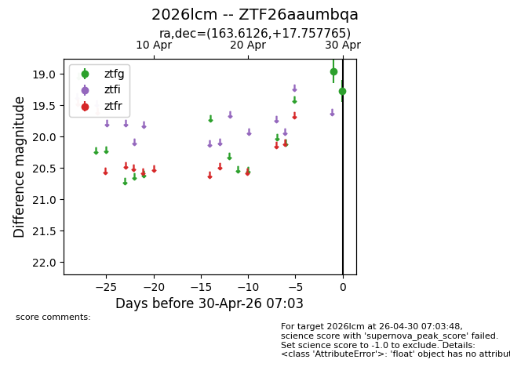
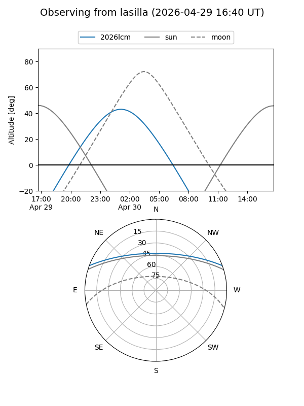
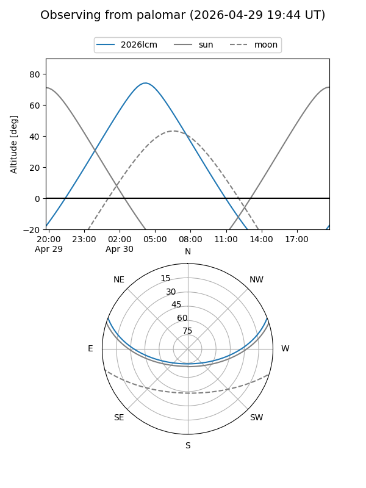
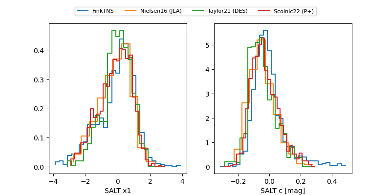

2026lcm
Target 2026lcm at 2026-04-30 07:08
Aliases and brokers:
FINK: link
Lasair: link
ALeRCE: link
TNS: link
YSE: link
alt names
ZTF26aaumbqa (ztf,fink_ztf)
2026lcm (tns,yse)
Coordinates:
equatorial (ra, dec) = 163.6126,+17.75777
equatorial (HMS+DMS) = 10:54:27.02,+17:45:27.96
galactic (l, b) = (225.9363,+61.47493)
Flags:
Photometry:
last ztfg=19.27
2 ztfg detections
Lightcurve

Visibility


Additional plots
